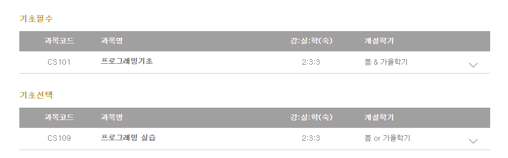
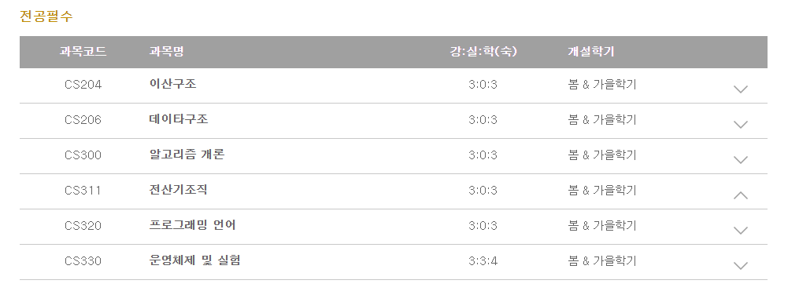

10406 김민호 진로 발표 사이트
안녕하세요 이번에 발표를 위해서 사이트를 만들어본 김민호입니다.
학과, 입시정보뿐만 아니라 약간 세부적인 것들까지 알려드릴 예정입니다.
모두 집중해서 봐주세요^7^
-KAIST-
Korea Advanced Institute of Science and Technology
카이스트는 국내에서 최고의 대학 중 하나로,
QS 2022-23 아시아 대학 평가에서 국내 1위, 아시아 8위를 차지했습니다.
또한 한국에 있는 4개의 과학기술원 중 하나입니다.
교육부가 아닌 과학기술정보통신부 산하의 고등고육기관입니다.
-전산학과-
컴퓨터 공학과 이름만 다를뿐 기본적으로 같은 과정을 배웁니다.
카이스트는 무학과 입학을 기본으로 하므로
1학년 때에는 모두 기초과목을 듣습니다.

-입학전형-
-창의도전전형-
KAIST는 내년인 2024학년에 창의도전전형을 신설해 200명을 모집합니다.
서류평가는 지원자가 제출한 모든 서류를 바탕으로 학업성취도 학교생활충실도/인성 도전/창의/배려 발전가능성
등을 고려해 종합평가하는 걸로 진행됩니다. 창의도전은 서류100%로 선발합니다.
10월 말, 합격자를 조기발표하는 것 외에 일반전형과 중복지원이 가능한 점도 특징입니다.
-기초필수과목-
-전공필수과목-
